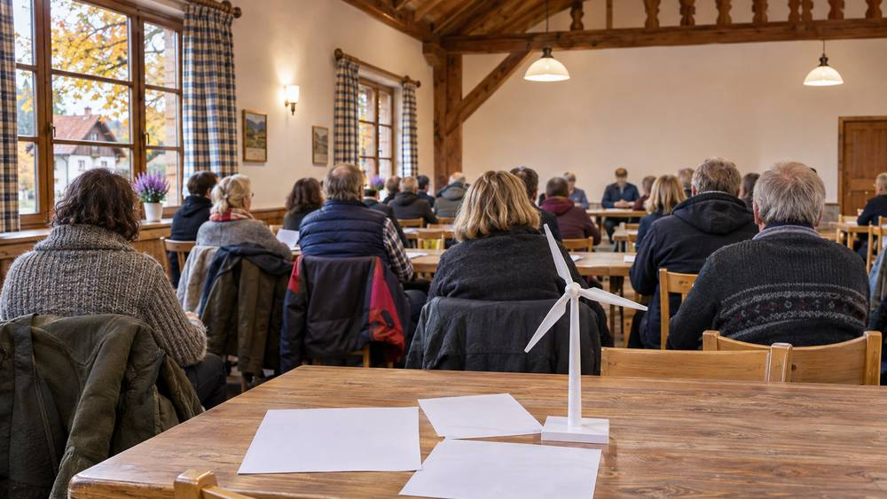

독일 이젠 주민 풍력 협동조합, 조합원 약 470명에 출자금 80만 유로 모았다

바이에른 산림공사가 7월 21일 풍력 2기 사업자로 선정…착공까지 몇 년 더 걸린다고 답변
독일 바이에른주 에르딩군 이젠에서 주민이 직접 풍력발전기를 세우려는 협동조합의 조합원이 약 470명으로 늘었고, 모인 출자금은 약 80만 유로다. 바이에른주 산림공사(BaySF)는 7월 21일 이젠의 풍력발전기 2기(계산상 약 1만 가구 분량)를 개발·운영할 사업자로 시민에너지공동체 이젠탈 협동조합(BEG Isental eG)을 선정했다.
주민 단체 시민에너지 이젠탈(Bürgerenergie Isental)은 최근 이젠의 클레멘트홀에서 풍력 경험 나눔 행사를 열었다. 착공 시기를 묻자 카르스텐 보르크만 업무집행자(Geschäftsführer)는 건설까지 몇 년이 더 걸릴 것이며 지금은 준비 단계라고 답했다. 객석에서는 소음과 전력망 안정성을 걱정하는 의견이 나왔다. 강연자인 에르빈 카르크 푹스탈 전 시장은 자기 마을이 시민 소유 풍력발전기 7기를 운영하며 소방서와 유치원을 지역 안에서 마련했다며 "돈이 마을에 남는다"고 말했다. 산림공사는 21일 발표에서 사업 이행이 관계 당국의 허가에 달려 있다고 밝혔고, 건설·가동 시기는 제시하지 않았다.
출처: Merkur 2026-11-14 Veronika Vogel 원문 보기
출처: Bayerische Staatsforsten 2026-07-21 보도자료 「Acht neue Windenergieanlagen für Bayern geplant」 원문 보기
출처: Meine Anzeigenzeitung 2026-11-14 Veronika Vogel (같은 기사 지역지 게재본, 본문 확인용) 원문 보기
独イーゼンの住民風力協同組合、組合員約470人・出資金80万ユーロを集める
バイエルン州有林公社が7月21日に風車2基の事業者として選定…着工まで数年かかると回答
ドイツ・バイエルン州エルディング郡イーゼンで、住民が自ら風力発電機を建てようとしている協同組合の組合員が約470人に増え、集まった出資金は約80万ユーロとなっている。バイエルン州有林公社（BaySF）は7月21日、イーゼンの風力発電機2基（算定上、約1万世帯分）を開発・運営する事業者として、市民エネルギー共同体イーゼンタール協同組合（BEG Isental eG）を選定した。
住民団体「市民エネルギー・イーゼンタール（Bürgerenergie Isental）」は最近、イーゼンのクレメンツザールで風力の経験共有イベントを開いた。着工時期を問われたカルステン・ボルクマン業務執行者（Geschäftsführer）は、建設まではさらに数年かかり、今は準備段階だと答えた。会場からは騒音や電力網の安定性を心配する意見が出た。講演したエルヴィン・カルク元フクスタール市長は、自らの町が市民所有の風力発電機7基を運営し、消防署と幼稚園を地域の中で賄ったとして「お金が村に残る」と語った。州有林公社は21日の発表で、事業の実施は所管当局の許可次第だとし、建設・稼働の時期は示さなかった。
出典: Merkur 2026-11-14 Veronika Vogel 原文を読む
出典: Bayerische Staatsforsten 2026-07-21 보도자료 「Acht neue Windenergieanlagen für Bayern geplant」 原文を読む
出典: Meine Anzeigenzeitung 2026-11-14 Veronika Vogel (같은 기사 지역지 게재본, 본문 확인용) 原文を読む
德国伊森居民风电合作社成员约470人、筹得出资80万欧元
巴伐利亚州有林业公司7月21日选定其承建2台风机…开工还需数年，负责人回应
在德国巴伐利亚州埃尔丁县伊森，居民打算自建风力发电机的合作社成员已增至约470人，筹得的出资约80万欧元。巴伐利亚州有林业公司（BaySF）7月21日选定市民能源共同体伊森塔尔合作社（BEG Isental eG），负责开发和运营伊森的2台风力发电机（按测算约可供1万户家庭用电）。
居民团体“伊森塔尔市民能源（Bürgerenergie Isental）”近日在伊森的克莱门特厅举办风能经验分享会。被问及开工时间，业务执行人（Geschäftsführer）卡斯滕·博格曼回答说，建设还需数年，目前处于准备阶段。台下有人对噪音和电网稳定性表示担忧。主讲人、富克斯塔尔前镇长埃尔温·卡尔克说，他所在的镇运营7台市民所有的风力发电机，并在当地解决了消防站和幼儿园的建设资金，“钱留在村里”。州有林业公司在21日的发布中表示，项目能否实施取决于主管部门的许可，并未给出建设和投运时间。
来源: Merkur 2026-11-14 Veronika Vogel 查看原文
来源: Bayerische Staatsforsten 2026-07-21 보도자료 「Acht neue Windenergieanlagen für Bayern geplant」 查看原文
来源: Meine Anzeigenzeitung 2026-11-14 Veronika Vogel (같은 기사 지역지 게재본, 본문 확인용) 查看原文
Isen residents' wind cooperative in Germany reaches about 470 members and €800,000 in capital
Bavarian State Forests picked a cooperative for two turbines on July 21; construction is still years away, managing director says
A cooperative that residents of Isen, in Bavaria's Erding district, want to use to build their own wind turbines has grown to about 470 members, and the capital raised stands at about €800,000. On July 21, Bavarian State Forests (BaySF) selected the Bürger Energie Gemeinschaft Isental eG (BEG Isental eG) to develop and operate two wind turbines in Isen, sized on a calculated basis to supply about 10,000 households.
The residents' group Bürgerenergie Isental recently held a wind energy experience evening at the Klementsaal in Isen. Asked when construction would begin, managing director (Geschäftsführer) Karsten Borgmann said it would take several more years and that the group is in a preparation phase. Some in the audience raised concerns about noise and grid stability. Speaker Erwin Karg, former mayor of Fuchstal, said his community runs seven citizen-owned turbines and arranged a fire station and a kindergarten locally, adding: "The money stays in the village." In its July 21 announcement, BaySF said implementation depends on permits from the responsible authorities and gave no time for construction or operation.
Source: Merkur 2026-11-14 Veronika Vogel Read the original
Source: Bayerische Staatsforsten 2026-07-21 보도자료 「Acht neue Windenergieanlagen für Bayern geplant」 Read the original
Source: Meine Anzeigenzeitung 2026-11-14 Veronika Vogel (같은 기사 지역지 게재본, 본문 확인용) Read the original